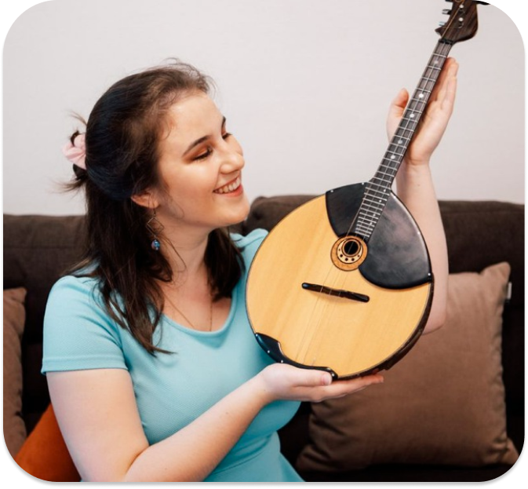
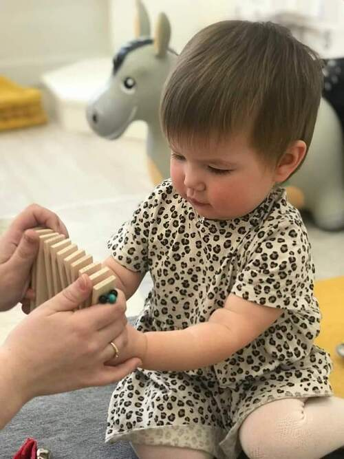
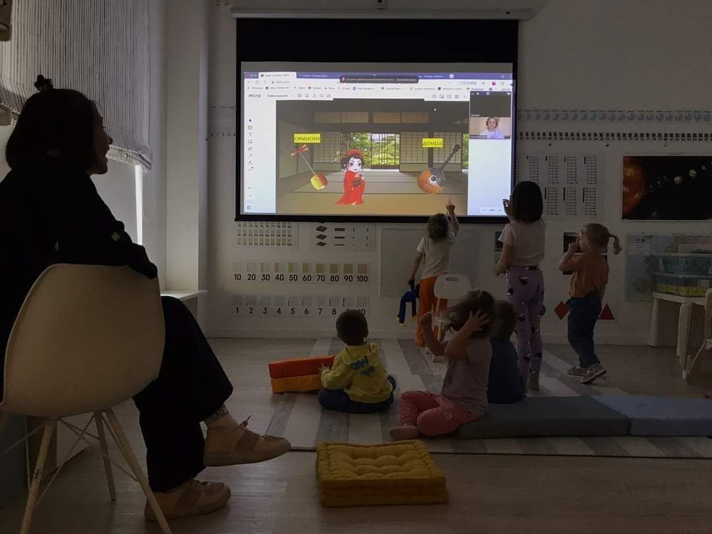

Привет! Меня зовут Нина Фирстова. Я преподаватель музыки для детей.
Музыка - универсальный способ общения, который точнее всего способен передать все чувства и
переживания человека. Занятия с детьми я провожу в игровой форме. С помощью образов и знакомых ребёнку вещей, я
объясняю то, что кажется непонятным в школе и отбивает интерес. На моих уроках Ваш ребёнок никогда не будет
скучать. Сказки, картинки, весёлые песни погрузят его в мир музыки, где все ему станет понятным и естественным.
Если нет возможности заниматься офлайн-не беда. Я могу не менее эффективно проводить уроки через Skype, Zoom,
Telegram и т. п. Мои ученики занимают призовые места на конкурсах,
а также показывают отличные результаты на экзаменах по сольфеджио.


Мои уроки подойдут тем, кто хочет, чтобы его ребёнок:
✅️ -Улучшил свою речь
✅️ -Развивал оба полушария мозга
✅️ -Поставил голос
✅️ -Улучшил музыкальный слух, чувство ритма и мелкую
моторику
✅️ -Научился чётко формулировать свои мысли и желания
✅️ -Полюбил музыку
✅️ -Захотел и дальше развиваться в этой сфере
✅️ -Весело и с пользой проводил время
✅️ -Пел весёлые песенки и радовал ими вас.

Наши занятия проводятся на платформах с виртуальными досками Miro и Jamboard,
которые позволяют наглядно и в игровой форме рассказать обо всём, что предусматривает выбранная нами на
вводном уроке программа.